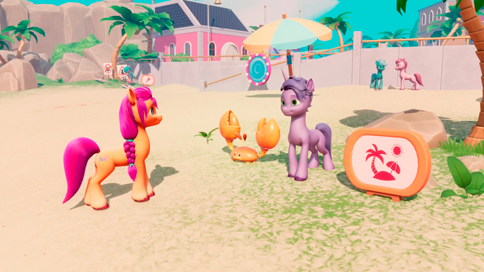

MY LITTLE PONY: A Maretime Bay Adventure
- Studio: Melbot Studios
- Platform: PC & Consoles
- Publisher: Outright Games
- Genre: Adventure
- Release: May 27, 2022
My contribution
World Quests
One of my first contributions to the project was working with the design team on implementing main story quests for the Tutorial, Brighthouse, Town Park and Mane Street zones of the game.
Also, I've worked on the node based system that manages the flow of the story progression of the game and created systems and their UI to detect triggerable events such as collecting items, talking to NPCs, interacting with objects or moving objects to a specific area of the map.

Bunny and Crab AI (World)
Implemented the AI for the bunnies that are found in the story quests of the game. Its based on a state machine and steering behaviors for the movement. The bunnies flee from the player with a movement influenced by a path so it flees towards a designed delivery zone, interact with holes to move around the world map and wander while the player doesn't interact with them.
Furthermore, I implemented the crab AI into the world quests where crabs had to be delivered to a specific zone.
Customization and Progression Rewards
Worked with the design team to implement the customization of the player character. This involved the creating a UI where the user can select diferent items under categories such as Head, Body, Neck, etc and equip them to the character model to customize it.
Furthermore, I implemented the progression system to unlock customization items be it from quest rewards or collectables in the game world.

PS4 Port
My last contribution to the project was the development of the port to PS4 as a solo developer. The work involved benchmarking and testing the game on a PS4 console, fixing any bugs related to the platform change, applying the required console specific UI and making sure everything was according to the Sony guidelines to pass the acceptance.